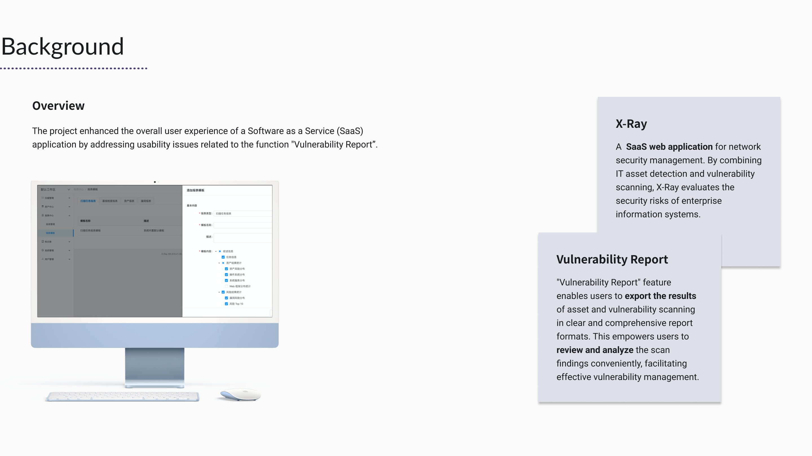
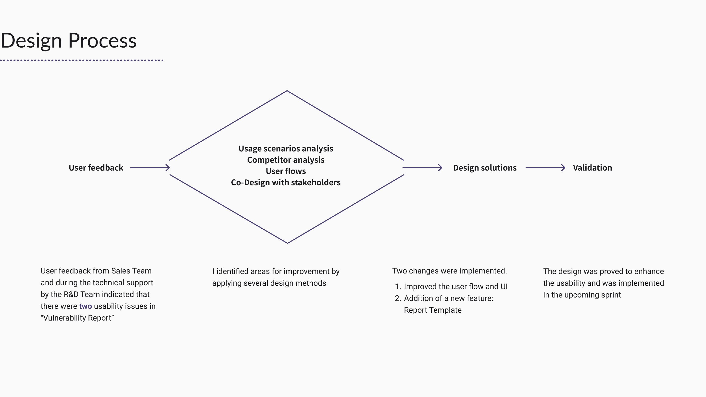
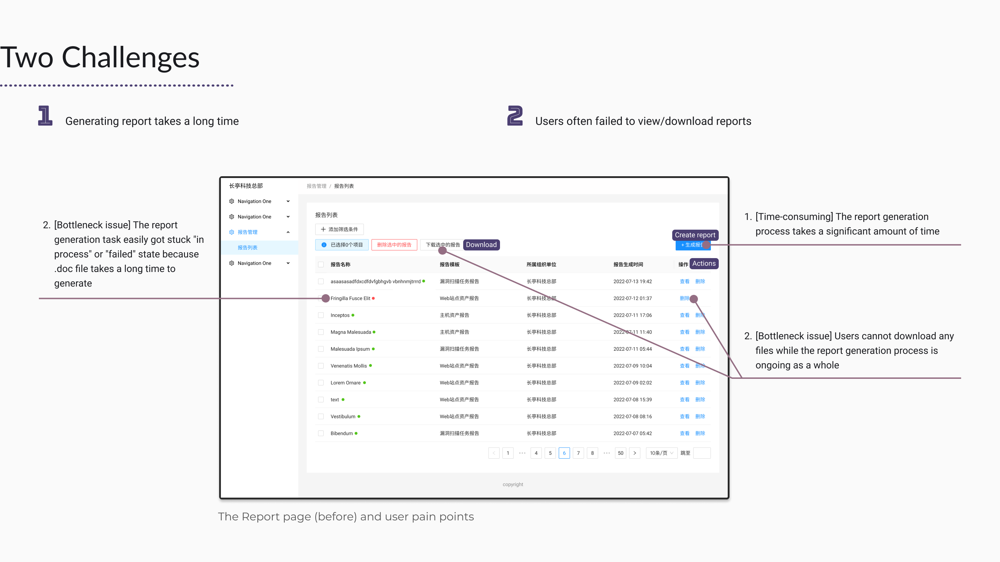
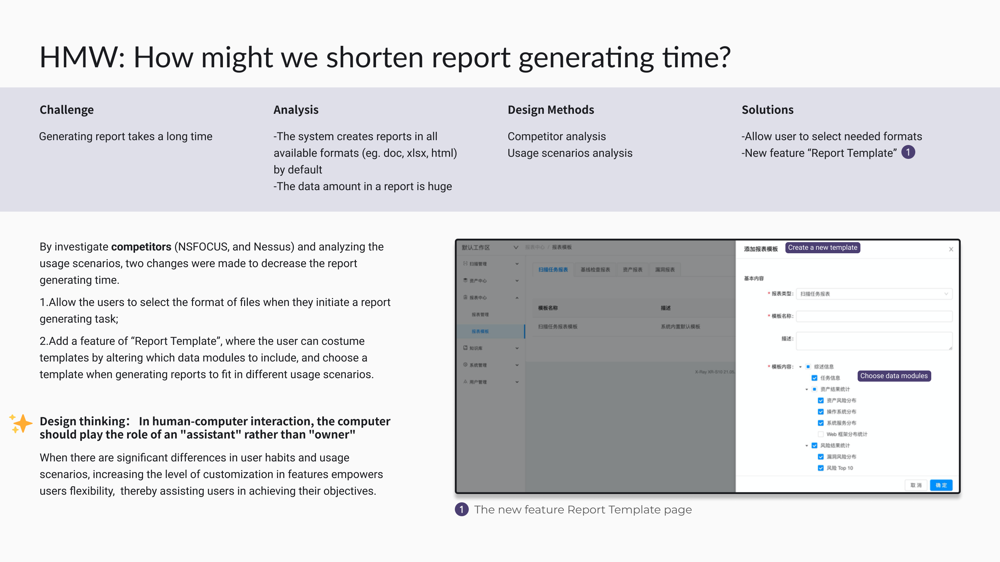
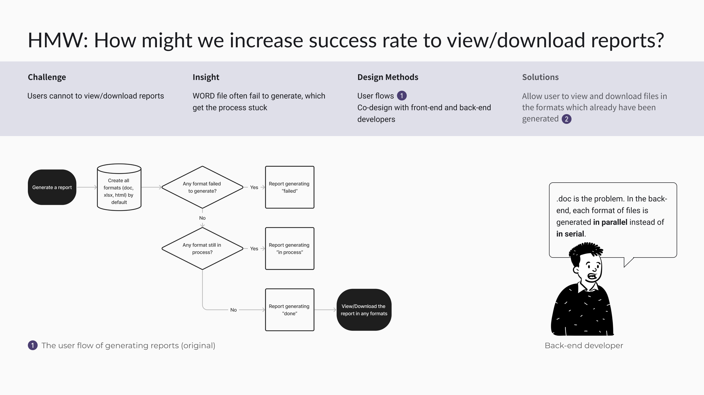
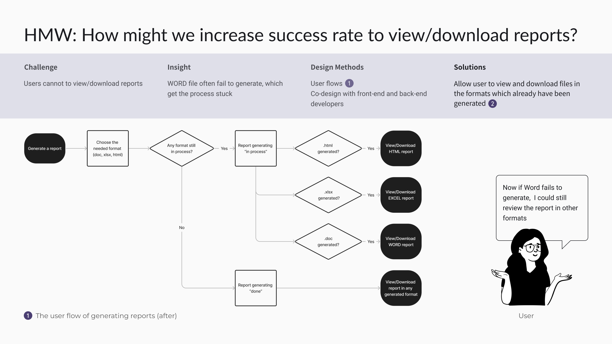
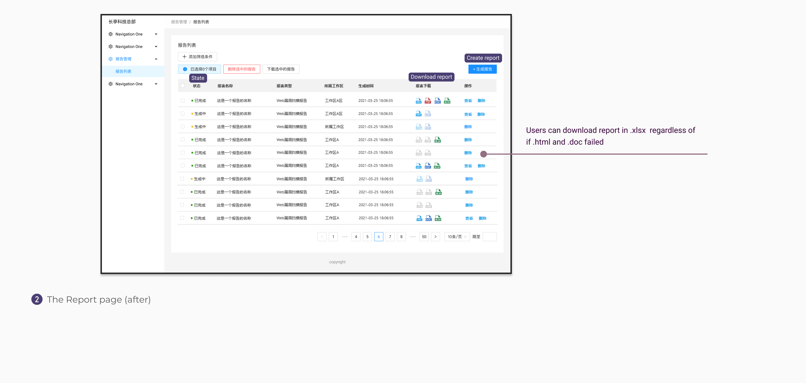
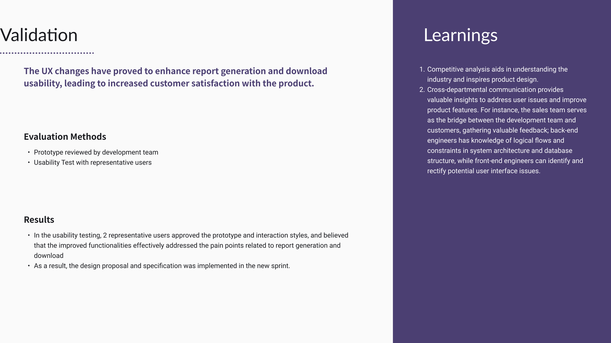

< Back

Enhanced the user experience of a SaaS App by addressing usability issues related to the function "Vulnerability Report”.
Internship
Product Design; Requirements Management
Feb 2021- Aug 2021, six months